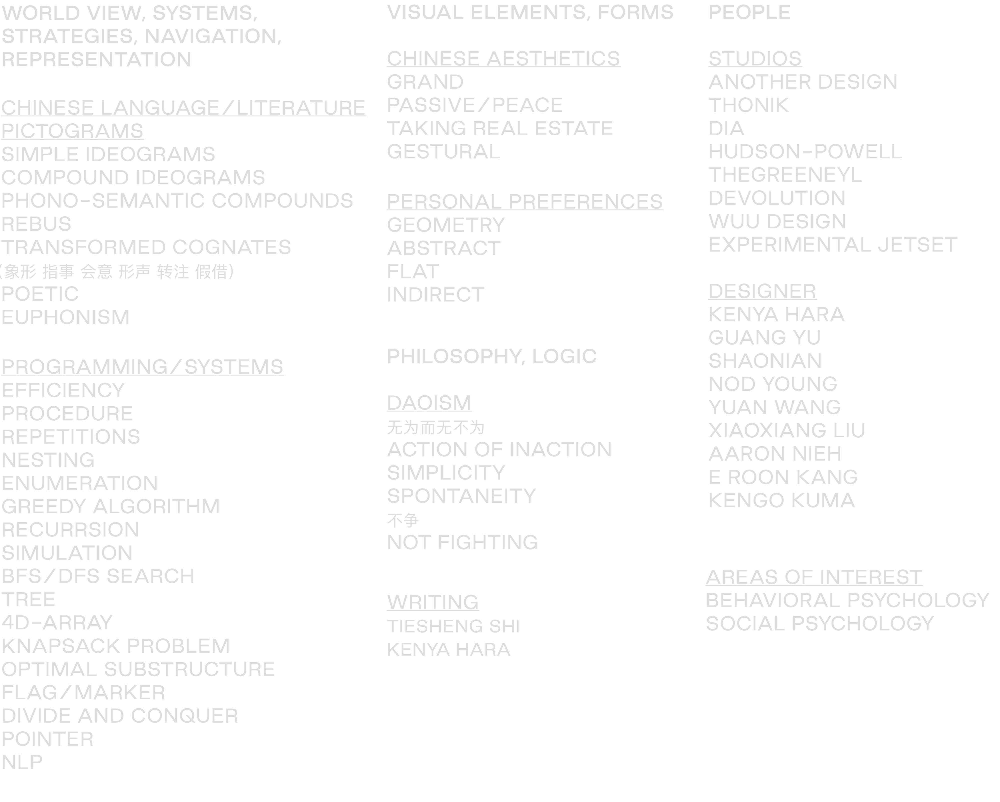
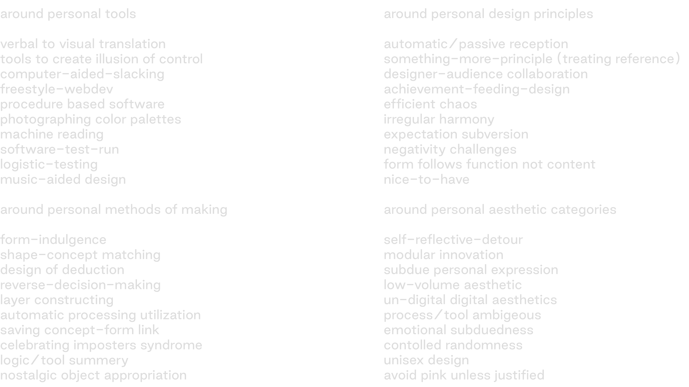

Due to the nature of our role, it seems as though we are floating in a void aimlessly and repetitively. However, when we admit to our role, we become who we are and we aren’t who we are not, accepting the satisfaction along with the responsibilities¹.
1
What drove me to graphic design is the observation that verbal communication is inefficient. The liberty, ease that verbal communication comes with means lack of consideration into how something is being conveyed. The reception of such message would be difficult for the sheer amount of factors involved(tone, volume, context, personal history, etc), intentional or unintentional and the fact that most of time one cannot fully express ones; thoughts. Part of a designer’s role is to consider those things and use visual languages to aid the communication for the reception to happen in less time, with more accuracy.
This means we are not authors of content. One can be both an author and a designer, but our value lies in handling content. I see the designers’ strength being curiosity, willingness to learn about a variety of topics and ability to see the connection between subject matters. We query the source what they wish to accomplish and stay true to that. While one would argue that it is impossible to be truly objective, it is not futile to try in my opinion. I choose the method to always derive from the content, as inserting myself and my self-interests at the time of conceptualization into the communication process is additional noise. Coincidental match of self-interest and subject matter sometimes happens, but not all the time. In the end, it takes less time to comprehend something that makes sense. When chaos is clearly intentional, it is efficient chaos.
2
One notion that I am influenced by is this speech²:“When everyone around you is crying, you deserve to be allowed not to cry, and when the tears are all for show, your right not to cry is greater still”. Also on the same topic are the Daoism notion of “do not impose on others what you want” and some mistakes³ made in Chinese history. I believe that people should be allowed to be interested in different things, topics, logic, softwares, visual styles. We are all born with different characteristics, grew up with different interests, and essentially good at different things. There isn’t any aspect of design that’s better or worse, they are just different. Trying to force everyone think the same is the same intention as authoritarianism.
As history has seen, graphic designer are needed. As much as the ivory tower makes it seem that fine art is somehow higher than traditional design or that doing traditional design is not enough. In reality, someone has to do the functional designs, someone has to draw a Chinese typeface. One should be allowed to do just that.
3
Anti-intellectualism is the state of society where the value of intellect is dismissed in favor of practicality, where individual opinions, “theories” eclipses extensive research and study. This is fostering the environment for politicians or institutional leaders to more easily sway people without much resistance. People are susceptible to emotional stories, opinions, even a louder voice. In the design world, loud, straightforward, short logics does get the message across, but it derives the public of the habit to think before reception of information in the long run. This doesn’t contradict my point about efficiency in that it doesn’t leave much of a lasting impression in viewer’s mind.
I find it more effective to make the audience do a little work in getting to the message. The participation and cognitive process involved makes that the viewer has to collaborate with the designer to get to an end. Whether it be by making analogies, romanticizing the subject matter or by presenting a logic, etc. The sense of accomplishment at the end of getting the message will make the reception of the message a pleasant, natural and lasting one. I start my design process by constructing the scenario where the design ultimately live and trace back to how each design decision will affect the viewers, for example, the route people take in a room where a poster is hung determine the distances and angles the poster if viewed at.
Part of a designers’ toolbox should be being able to predict users’ need and responses. In recent years of user interface/experience design, a lot of emphasis is placed on the users’ opinion, even more than designers. I believe this stemmed from designer placing too much emphasis on what they want as opposed to what the user’s want. I think the intensive focus on asking for user’s need and feeding them what they verbalized is a response to that. However, there is the fact that users’ don’t know what they want exactly, or are unable to verbalize it. This makes it possible to be able to create something the audience don’t know they want or something that’s “nice-to-have”. I find this to be true in the general graphic design field as well. If we are truly designing for the users and not designers, “looks cute” is a good enough response to a piece of design.
4
None of us is that important to society, and we shouldn’t be.
When it comes to contributing to society, I often think about my responsibility in juxtaposition to my friends who are in International Relations, Law, Statistics, Biochem, etc. We should be thinking about what we do best and not try to do what other people can do better. Some people will go into politics, some people will be making medicine, some will be policy makers.
While we are not irreplaceable, there are things we do better as designers. We studied typography rigorously for a reason, and that’s the same reason why lawyers are studying and memorizing laws. Labor division is one of the earliest stages of societal development. It might be worth in to position ourselves in a larger context and respect our and others’ “division”.
In Education of Desire by Kenya Hara, he raised the point that “if objects are created in response to people's desires, the quality of their desire will affect that of the object.” He has also talks about the role of designers in the public’s education on aesthetics in Designing Design. This is something I strongly agree with. As much as designers in the Ivory Tower despise the word “aesthetics”, it is part of human development and awakening the aesthetic awareness of the public is responsibility of the designer.
On a more personal level, the topic that I try to explore in seriousness is “interaction and algorithm as identity”. Because of my previous experience with programming, this is a sector I might have more value in. This doesn’t mean that I wish to be labeled a certain way. I simply feel the responsibility to contribute where I can.
¹ inspired by Fragments Written at the Hiatuses of Sickness, Shi Tie Sheng.
² Mo Yan 2012 Nobel Literature Prize Speech
process
This project stemmed from the realization that my design process always starts from studying the content. Without content, I feel lost. To find the most random content, I went to a random-word generator. "Satellite Confessions" was one of the results. I did research on satellites, the obvious and the strange. During the process, the parallel between satellites and my design methodology became clear. Studying satellites helped me understand my design practice essentially.
map
words
